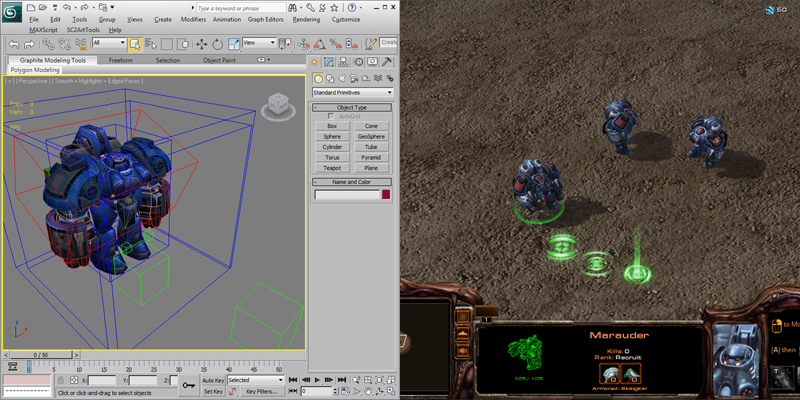
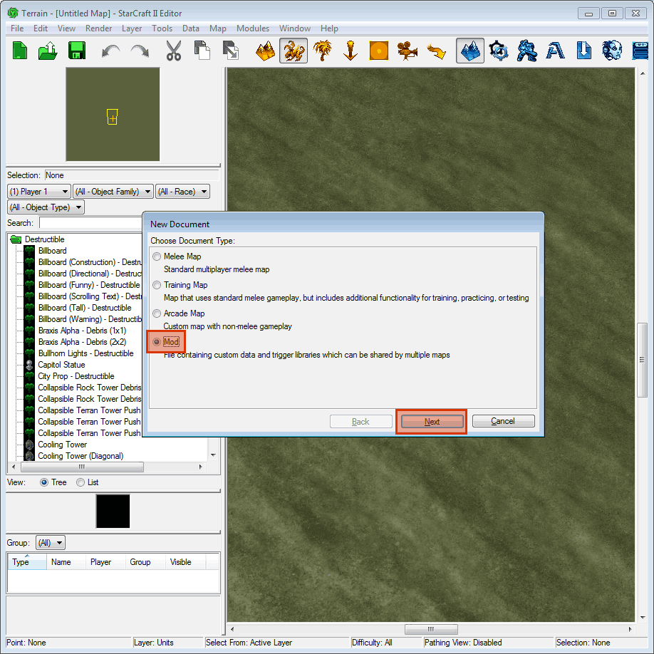
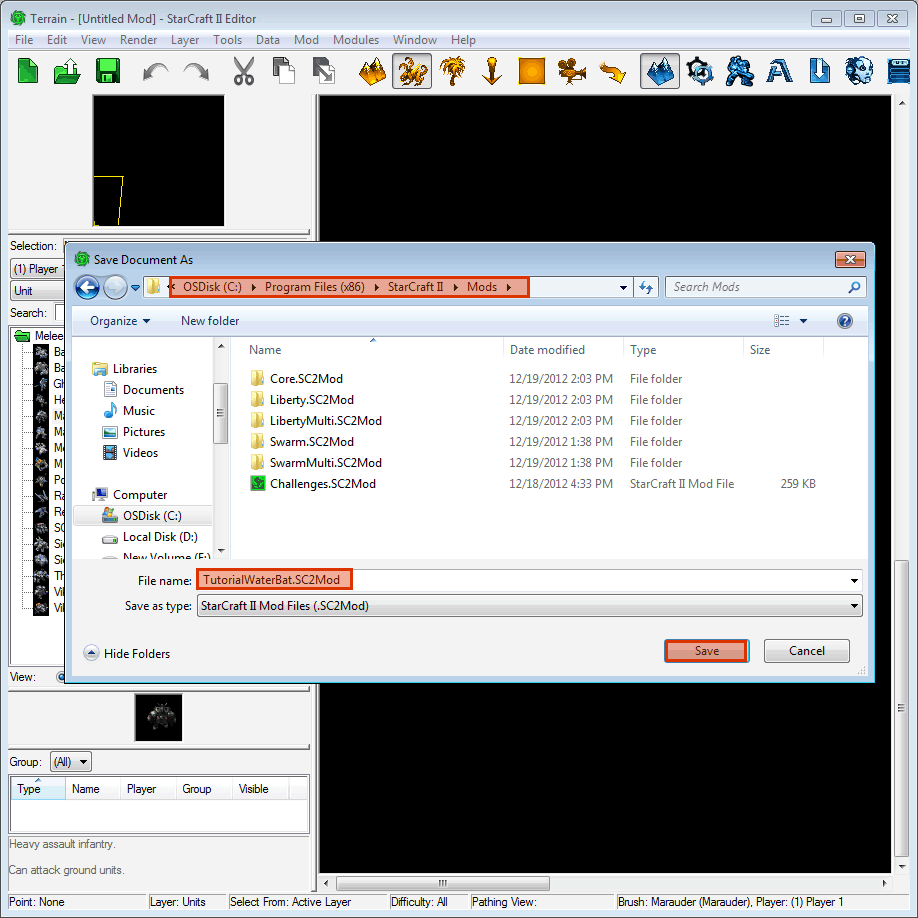
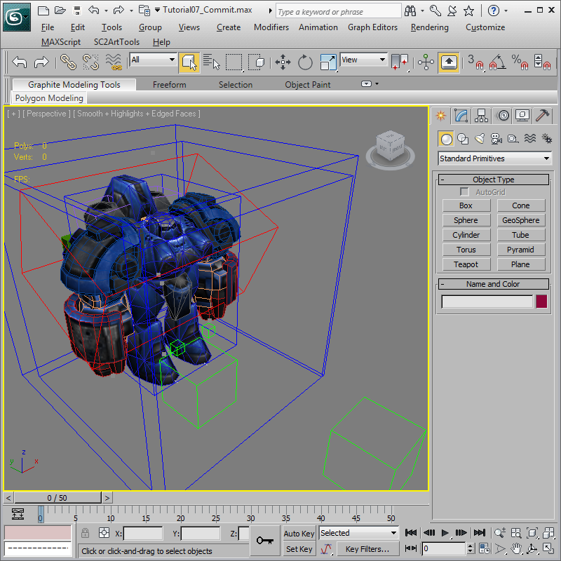
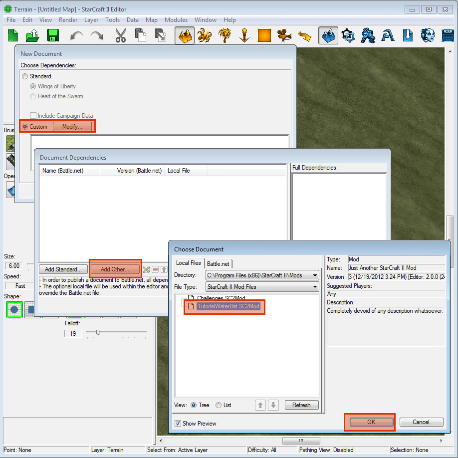
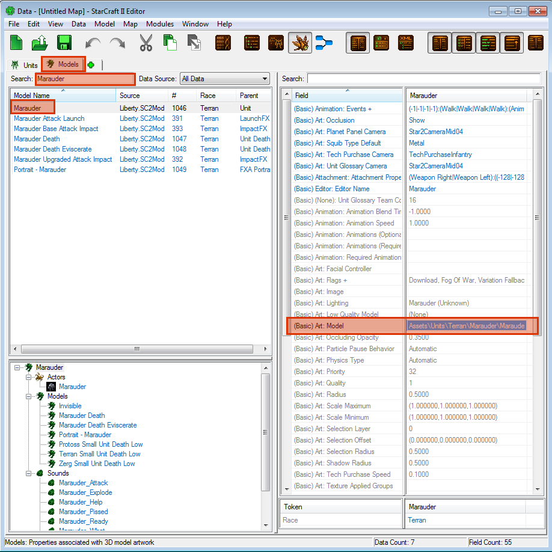
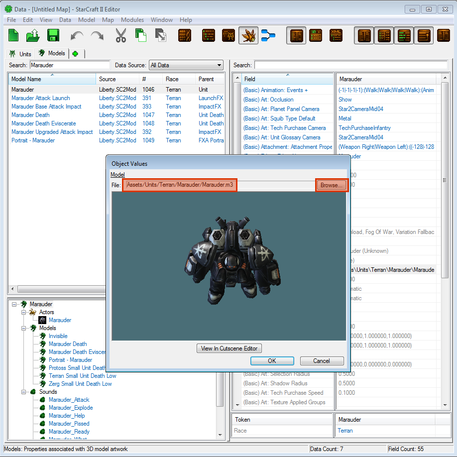
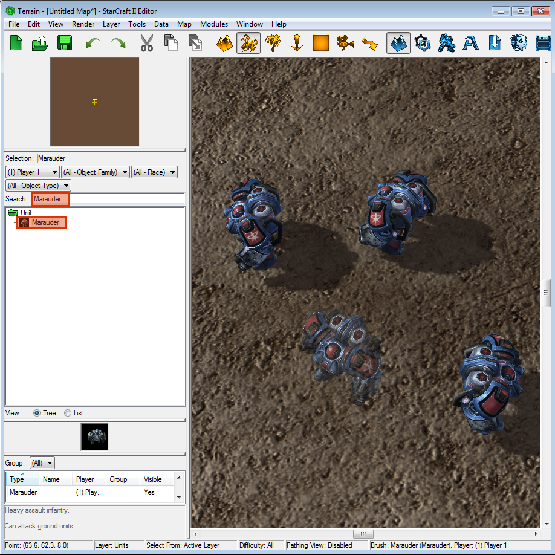
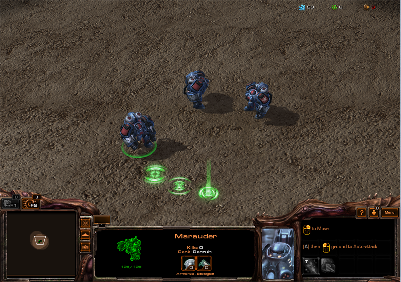

Tutorial 04: Commit Models
SC2ArtTools supports adding art assets directly to a StarCraft II custom Mod including model, animation and compressed textures. These art assets will be available to any map that is dependent on this new custom Mod. This Tutorial contains the basic steps to get art into the game and it is not meant to be an exhaustive tutorial on how to use the editor. For more information on using the StarCraft II Editor, there are many excellent online and community resources, such as the Official Guides, SC2 Mapster, the Battle.net Forums, and Team Liquid.
Getting Started
-
Before we start, you must have a StarCraft II license and Battle.net account to run the StarCraft II editor. If you do not have a character, please also create one by logging into StarCraft II and following the prompts.
Create a new Mod
-
Let's get started. Open The StarCraft II 2.0.3 Editor (or newer). Select File > New and then the Checkbox Mod. This opens another window allowing other mods, but we will just hit OK. The editor will open a new empty untitled Mod.
 -
We need to save the Mod with a new name. In the StarCraft II editor, Select File > Save and navigate to where your StarCraft II Mod Directory is. For 64-bit Windows users, this is likely C:\Program Files (x86)\StarCraft II\Mods\. Let's name the Mod TutorialWaterbat.sc2mod. At this point we need to actually close the Mod to allow 3ds Max to write to it. This can be done by either closing the Editor completely, or using File > Close in the Terrain Editor.

Commit to the Mod
-
Now you are ready to commit art to the Mod. Open 'Waterbat_Tutorial05_Complete.max' in 3ds Max. This file contains meshes, materials, animation, helper objects and more. It is ready to be exported as an asset in StarCraft II. During the model creation step, the “preview to Cutscene Editor” functionality also exports to game format. However, for the sake of speed, it skips some important steps. Committing the art to a Mod also converts all the textures to the Direct Draw Surface (DDS) format, performs DXT compression on them, and fixes up relative texture paths in the model. Once this is done, the model and textures will load correctly in the game.
 -
In 3ds Max, select from the main menu SC2ArtTools > Commit > Commit. A browser will pop-up requesting a path to a Mod. Please use the same path and Mod name created in Step 3. Example C:\Program Files (x86)\StarCraft II\Mods\TutorialWaterbat.sc2mod. The Log Floater will report all the mesh and texture conversions then end with 'model committed successfully'. Please note that the model name is always the same as the 3ds Max file.
If you are able to view contents of the assets in the Mod directly it should look like this:
- Base.SC2Assets\Assets\Models\Waterbat_Tutorial05_Complete.m3
Base.SC2Assets\Assets\Textures\Decal_StarToolsTutorial_0000_01.dds
Base.SC2Assets\Assets\Textures\Reflection_StarTools.dds
Base.SC2Assets\Assets\Textures\WaterBat_Diff.dds
Base.SC2Assets\Assets\Textures\WaterBat_Emis.dds
Base.SC2Assets\Assets\Textures\WaterBat_Envio.dds
Base.SC2Assets\Assets\Textures\WaterBat_Norm.dds
Base.SC2Assets\Assets\Textures\WaterBat_Spec.dds
- Base.SC2Assets\Assets\Models\Waterbat_Tutorial05_Complete.m3
Load the Mod in the Editor
-
Now we are ready to create a map using the new Mod. In the StarCraft II Editor, select File > New and then select Arcade Map. When you see the dependency selection screen, select Custom and Modify. On the next screen press Add Other, then select TutorialWaterBat.SC2Mod and hit OK. Mods/TutorialWaterBat.SC2Mod should now be in the Document Dependencies window, select OK once more. With that, your newly created art will be available in the map.

Set up Data
-
For the quickest way possible to see our Waterbat in the game, all we will do is redirect the Marauder model data to use the new Waterbat model. To do this, open Modules > Data in the StarCraft II Editor main menu. Once in the Data Module, open the Models tab by pressing the '+' tab, then 'Edit Art And Sound Data > Models' In the search field type Marauder, which will give you all the models with IDs that contain the string 'Marauder'. Select the one named 'Marauder' and then edit the field (Basic) Art: Model by double-clicking it. This will bring up a mini-preview and model path. Edit the model by selecting Browse. Search for 'Waterbat', select the 'Waterbat_Tutorial05_Complete.m3' model file and press OK. The mini preview should now show the waterbat model. Press OK again and the (Basic) Art: Model should now point to 'Waterbat_Tutorial05_Complete.m3'.
 
Create a map to test the Waterbat
-
In the Terrain Editor Module, select Layer > Units and place a few Marauder on the map. Since the Marauder data has been changed to use the Waterbat art, you will see the Waterbat mesh, animation and textures.

Final Result
-
Use the Test Document function to test the map. Once the game loads, you would see your Waterbats and be able to control it in the game. Note that only the Unit model is changed, the Death model will pop back to the Marauder. Portrait art is also unaffected. It is possible to update wireframes and portrait models using these same methods or even make new units from scratch completely.
